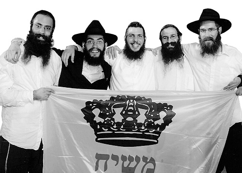

It was a long process that unfolded before R’ Refael Shuval changed hi
It was a long process that unfolded before R’ Refael Shuval changed his life and became a Chassid. Hashgacha Pratis prevented him from reaching the front line outpost on Har Dov and kept him on a base near his home where he began reaching out to soldiers. The results: three became Lubavitchers, some

UPHEAVALS AND CHANGES: NOT ALL AT ONCE
Can you remember the point when you realized that a real change was taking place?
Yair: The turning point was an accident I was in on Shabbos near one of the beaches of the Kinneret. The car was totaled, and my friend and I who were in the car got out with barely a scratch. My mother urged me to go and say the HaGomel blessing in the shul on the nearby yishuv, B’nei Yehuda. That was when I made an unconscious commitment to go to shul every Shabbos. I still wasn’t Shomer Shabbos, but all that work that R’ Shuval did with me, when I served in the army, came to the fore. Throughout this time, we would talk on the phone every few weeks.
One day, I felt a strange feeling that pushed me to make a decision, to stop straddling two worlds. I called R’ Shuval and he invited me to his house for Shabbos. That Shabbos was very special and it gave me another stronger push to make a decision. I walked into his house and felt as though I was in another, magical world, like in a story. It was before Shabbos and the house was at peace. On Shabbos I attended the farbrengens and davening. Motzaei Shabbos, R’ Shuval gave me the address of a Chabad house.
Before I left, he gave me, in addition to the Chitas (which he gave to all of us on base), a Machzor for Rosh HaShana and Yom Kippur that were only days away. In Raanana I attended the shiur given by R’ Dunin that took place in the Chabad house. I found R’ Dunin very impressive, and at the end of the shiur I heard him ask R’ Shadmi, “Where are we sending him? Is Ramat Aviv for him?” R’ Shadmi said yes. Then R’ Dunin declared that I belonged in Ramat Aviv; that was without consulting with me.
For Yom Tov I went to families of Anash in Raanana and then I went to learn in Ramat Aviv. The rest is history.
Nadav: The nicest thing about Rafi was that even after he finished with the Reserves, he kept in touch and kept visiting the base. Our relationship grew stronger. We felt that he loved us. What greatly appealed to me and motivated me to change my approach was the maamer that we learned about how everything in the world, even if there is truth to it, has an element of self-interest. The only exception is one who chooses the King, since He is the One who runs everything. I remember that this shook me up.
R’ Shuval gave me many books to read including Lessons in Tanya. One day, I opened the first volume and read, “He is made to take an oath that is administered to him in heaven, charging him: Be righteous and be not wicked.” I read it again and again and knew that this was Truth. I put the book aside and was unwilling to touch it. I felt that someone was pulling the rug out from under my feet while I still wanted to enjoy this world.
On Purim, I visited R’ Shuval and he took me to R’ Rosenfeld’s farbrengen. There, for the first time, I saw what pure joy is and with that the final barriers between me and Yiddishkait fell away.
Shai: I felt an inner awareness as soon as I got to know R’ Shuval, but it took more time until this developed into serious changes in my life. I just remember that as soon as I was released, I went to study alternative medicine at the Reidman Center in Tel Aviv where there were many students who were involved in meditation. I can’t forget how inside I laughed at them. After you know authentic Judaism, you look at these things disdainfully. I scorned it both to myself and to others, and that was when I was still not openly religious.
When I read a certain Eastern philosophy before I was drafted, I saw that one of its principles is to repeat every day, “Don’t get angry today,” and “Don’t worry today.” I would work on myself to act on these lines. It took me five years to achieve some measure of success. Then, when I learned Tanya about the true paths to simcha, I was able to make great strides in this within one year! I felt that true inner work on middos is only in Judaism.
I made the real change when I flew to the Rebbe. However, prior to making that move, I had a big obstacle to overcome. I made my living from massages, and most of my jobs were on Shabbos. I always felt guilty about working on Shabbos and my friends urged me to stop working on Shabbos. I was afraid of losing most of my earnings, until one Shabbos when I decided to rest and trusted in Hashem, who provides parnasa, to take care of me. I wanted to see, what would happen if I tried? The amazing thing was that the following week, I got double the number of clients. I saw Hashem’s bracha.
In Tishrei of that year, I went to the Rebbe. I was still not wearing a kippa or tzitzis. I kept talking to R’ Shuval. Inside, I was on fire, but I was afraid of making a big change in my life. He urged me to go to 770, to the Rebbe. I did not understand why he was pushing me so much, but I was finally convinced to go. I went to 770 and did not leave. After Tishrei, I returned to yeshiva in Tzfas as a Lubavitcher.
DIFFICULTIES AT FIRST
R’ Shuval, how did you feel as they turned into Chassidim before your eyes?
Rafi: Three of them became Lubavitchers, but others turned to other groups, and still other soldiers became stronger in general. There are some more soldiers with whom I am in touch who will definitely still make further changes B’ezras Hashem.
As to your question, when you do mivtzaim you don’t think and plan for other Yidden to become baalei t’shuva. You do the work as a soldier of the Rebbe and the Rebbe helps.
On the base I had a relationship with everyone except for two soldiers. One of them I nagged for eight months to put on t’fillin, but he refused every time. That officer serves in Intelligence and was a hard karkafta to crack. After eight months, even my persistence flagged and I threw up my hands in despair. Then the unbelievable happened. He came to me!
Before I put t’fillin on him, I asked him, “What happened?”
He said, “I see how t’fillin were so good for Nadav who serves with me. They made him happy. I want that too.” It made me happy to see them change before my eyes; it was very satisfying. I know that it gives the Rebbe nachas.
Were you aware of the difficulties they would have to face?
Rafi: I think that what helped me understand them, in the early stages of their becoming baalei t’shuva, was the fact that I myself had gone through the same process four years earlier. It is very important to keep in close contact with those that one is mentoring, especially in the early stages. During that period, one needs almost daily guidance in everything. Until today, there are two guys with whom I am in close contact. One already goes to shiurim at the Chabad house in his city and the other one, a security guard at Tel Aviv University, has already attended farbrengens at the yeshiva in Ramat Aviv.
A baal t’shuva has many challenges and I go through it with them. It’s a stage in which you lose a world without knowing what world you are going into. There is a lot of uncertainty. You need to drop habits, hobbies, and even friends. Some people lose parnasa and even family. It’s not a simple process. My parents took it very hard. In the early years, I had a hard time with them, and that was despite the fact that my father grew up in a religious family. It’s a long way from those initial hurdles to coming home with a hat and jacket.
What about you guys – did the initial stage of the process feel as challenging as the way he described it or was it easier for you?
Yair: I am listening to R’ Shuval and remembering difficulties I had with my parents. They did not understand what had happened to me. I remember talking to my father and he cried, “You are leaving us! You are going towards the unknown. Did we not give you enough?” They sent my sister to see what was going on with me – maybe I was lacking something; maybe I was using illegal substances that were causing me to make irrational decisions. My father asked me questions and I didn’t really know what to tell him. I was very calm and did not get angry. I simply said this was good for me.
I had to keep on reassuring them that their darling was fine, had not gone crazy, and had just chosen the path of Truth. When I learned in yeshiva in Ramat Aviv, I visited my parents every month. I remember that in the beginning, my father and I went to a grove near the yishuv and that is when I told him that I had chosen a new path. All in all, they respected me a lot, but it was still very hard for them.
When I learned in yeshiva they wondered how I would support myself in the future. It’s interesting that when I told my father that I wanted to fly to the Rebbe, he paid for the ticket. It was only afterward that I realized that he thought I would see the world and drop my weird interests, but when I returned and told them that I was starting shidduchim, they were in shock. “How can you get married when you don’t have any money?” But it happened. After meeting my future wife a few times, I told them that the shidduch had concluded and related all about the answer we received from the Rebbe. I thought my father would faint.
After the wedding, I was in kollel for a year, as the Rebbe says to do, and my father asked, “How will you have money to live?” I told him there is a G-d, and I was composed when I said it. It was only when I took a job in Ohr Menachem that my father calmed down a little. His son had gone to work.
When our first child was born, my mother was afraid that we might cut off ties with them, because how would we explain to our child that Grandma is not religious? Yet that passed too. Today they understand and respect the path we’ve chosen. They understand that it’s good for us and they know that we don’t force them to do anything. When we go to them for Shabbos, they shut the television and sit with us for Kiddush. Is it hard? Yes. But Hashem gives us the ability to handle it.
Nadav: For me, it wasn’t hard in the beginning; the difficulties only cropped up later on. In the early months I was on fire. R’ Shuval gave me a book called Ata Yodati (Now I Know) by R’ Chaim Sasson and I read it entirely. It was clear to me from the beginning that the Rebbe is Moshiach and Chabad is the Truth, but it was hard to turn my enthusiasm into something practical. After I went to the Rebbe, with the constant urging of R’ Rafi, I decided to go to yeshiva.
Shai: I did not experience any difficulties during the first year either. The advancement in my learning was at a fast rate. I avidly read piles of books from morning till night. The problems began a year later when I left yeshiva twice a week in order to finish my naturopathy studies. When I came back a year later, I experienced a crash. I had learned how to behave and I expected that everyone around me would behave that way too. Seeing things happening that I had not expected caused me to crash hard. It took me time to find an inner balance.
MOSHIACH WAS PART OF THE EQUATION
How significant was the topic of Moshiach in the course of your becoming religious?
Rafi: The topic of Moshiach did 90% of the work with the soldiers. As far as the remaining 10%, I tried not to get in the way. I did not avoid the topic of Moshiach at any point, and I never heard from anyone that he did not connect because of it. On the contrary, it’s a subject that sets a high standard from the outset, as far as making a strong and deep commitment is concerned. People understand that in this matter we go all the way.
Yair: I remember that in the beginning I had questions like “How do you know that the Rebbe is the one who is Moshiach?” It was not so much Rafi’s explanations of the Rambam’s criteria for Moshiach that I understood; but I felt that Rafi was explaining it sincerely.
Nadav: It was a topic that was central to my becoming religious. When I learned Tanya, I understood and felt that Judaism is the Truth, but what got me to take action and to start doing mitzvos was Moshiach. If he hadn’t talked to me about Moshiach and I had only learned Tanya, I don’t think I would be a Chabad Chassid today. Maybe I’d be someone who loves Judaism or a traditional Jew who doesn’t speak negatively about religious Jews. I definitely would not have grown a beard, put on a kippa, gone to yeshiva, and made a Chassidic home. When you talk about Moshiach, it’s something else entirely; much more powerful.
The idea of reward and punishment never moved me; that is not what got me involved. As kids, we would take a recording of Rav Amnon Yitzchok and play it in the car on Shabbos on the way to the beach. We considered it a great joke. Even the books of Breslov that exude love and emotion did not speak to me. But when you talk about Moshiach, about a global concept, not just another game in the local ball field, then that is something that appeals to me and speaks to me. It had an impact not just on me, but on all Jews – here, you have a mission to carry out.
Shai: Although I consider myself an intellectual type of person, when it came to Moshiach I did not mix in my seichel. When I was first becoming frum, when they spoke about the Rebbe, it was so tangible that I was sure they were physically seeing the Rebbe. When I realized that the Rebbe cannot be seen now, that surprised me, but I accepted it. I remember that the first week I got to know Rafi, I was standing waiting to hitch a ride and it was freezing. When cars did not stop, I said, “Rebbe, you are Moshiach. Please send me a ride,” and within a minute a car stopped that took me to my house.
One of Moshiach’s activities is to “compel all Israel.” Do you feel part of that process?
Rafi: If you don’t mention it constantly, the routine of life will make you forget it. In the beginning of the t’shuva stage, you feel it all the time. It is just like on Motzaei Yom Kippur when you feel spiritually elevated, but then it wanes over time. The exigencies of life make you forget, so from time to time I remind myself of those days, of the experiences I had. Sometimes, I sit before the bedtime Krias Shma and without being a big tzaddik I shudder, because despite everything that has been done until now, Moshiach still hasn’t come and we are in galus.
Nadav: Even if I want to forget, people remind me, whether it’s an encounter with friends from the past or family members who ask me what happened to me and why I’ve made this move. I have a ready answer for everyone: I wasn’t in an accident and nothing fell on my head and I did not encounter G-d.
People are sure that only someone who went through a tragedy or psychological trauma would do t’shuva, but that’s not me. Nothing bad happened to me, everything was fine, and life was good. I was a popular musician, my life was full of meaning and I had many friends. So why did I do t’shuva? Because the Rebbe decided to pick up my neshama from the abyss; there is no other explanation. A hidden hand raised me up to the path of Torah. That is what I explain to them. I remember that on the base we once learned the D’var Malchus on Parshas Mishpatim, how in the past the gentiles slaughtered one another and thought that was just fine, and now, there has been a turnabout in that regard. What happened? Did they all turn into peaceniks? The Rebbe explains that it’s because the atmosphere of the world has become more refined in these moments before the Geula. I was very taken by this approach.
Shai: In that initial period, I felt it every day, every hour. I had an enormous amount of strength and I felt very close to the Rebbe. I saw many miracles and clear hashgacha pratis.
I had an interesting story with Nadav when we went to the Rebbe for Tishrei. One night, we learned a maamer of the Rebbe Rayatz about the seventy oxen (brought as sacrifices on Sukkos) and Am Yisroel, and the Rebbe Rayatz explains that if a Jew stands strong, then the goy will submit. Not only that but he will answer amen. Right after learning the maamer, we went shopping in Manhattan and there, on one of the bridges, we met a black man who asked for a cigarette. After he got one, he began screaming at us and cursing about what we are doing to the Palestinians. He compared it to what the Americans did to the blacks.
At first we tried to be nice, but he continued forcefully until I suddenly remembered what it said in the maamer that we had just learned. I told Nadav, “Let’s answer him the way he should be answered.” We started talking to him firmly about how he must observe the Seven Noachide Laws and how Israel belongs to the Jewish people as it says in the Bible. Amazingly, he immediately calmed down and agreed with us.
It was incredible to see the actualization of what we had just learned. It “worked.” We had many examples like this. Instances like these are empowering. You feel that the Rebbe is with you. Today, working with children is harder; you experience less because you contemplate less, but I can recall the feelings that I once felt.
IN CHABAD, IT’S DIFFERENT
In conclusion, can you describe to us how Chabad appeared to you when you were outsiders?
Rafi: There is a Chassidishe explanation about Hashem “forcing the mountain over them like a barrel,” that Hashem bestowed tremendous spiritual bounty until the Jewish people were compelled to say “naaseh v’nishma,” having felt a great love for Hashem. It wasn’t intimidation but love, and that is what stands out in Chabad. I felt this very strongly at the Chabad house in Sydney. There we were, many people who in everyday life wouldn’t give each other a second glance. At the Chabad house, we were all one. It’s not just that we came there to eat; it went way beyond that. It must be a place that is higher than everything if it is able to include everyone. Uniting extremes is something only the Rebbe can do; it was definitely not the ko’ach of those three bachurim.
I remember that when I returned to Eretz Yisroel to my parents, I went to the nearest shul to daven on Shabbos. I sat down somewhere and was ejected by the person who usually sat there. I sat somewhere else and I was moved from there too. It happened a few times until all the seats were taken and I stood throughout the davening. The next day, I asked where the Chabad house in Netanya is. I went there and immediately felt the typical warmth of Chabad. R’ Dreyfus merely saw me, and he got up, shook my hand, brought me a Siddur, and invited me to the Shabbos meal.
Yair: It says that truth goes “from the greatest heights to the lowest depths.” I mainly felt the Chassidishe warmth in the home of R’ Shuval, then at the farbrengen with R’ Ofer Meidovnik where there was so much love. He hugged me and I guess he realized that I am a musician who loves blues. He told me again and again that “blues” in English means sadness. I wondered how he knew I like that kind of music; he was able to zero in on something that was important to me. What he said made a great impression on me, in addition to the atmosphere.
I am an emotional person after all, and what moved me was the Lubavitcher davening, with gravity and p’nimius, without shouting and waving arms all about. On my journey there were many good people who helped me like R’ Yitzchok Siman Tov, R’ Reuven Dunin, recordings of shiurim on Tanya from R’ Moshe Orenstein, R’ Liras Benita the shliach in Kfar Batya and of course, the yeshiva in Ramat Aviv.
It’s good that we are sitting here and talking, because it happens on my shlichus that I despair of certain people when I see nothing moving. I will leave inspired from our discussion here tonight!
Nosson Avrohom. "It was a long process that unfolded before R’ Refael Shuval changed hi." Beis Moshiach, no. 838 (June 22, 2012).